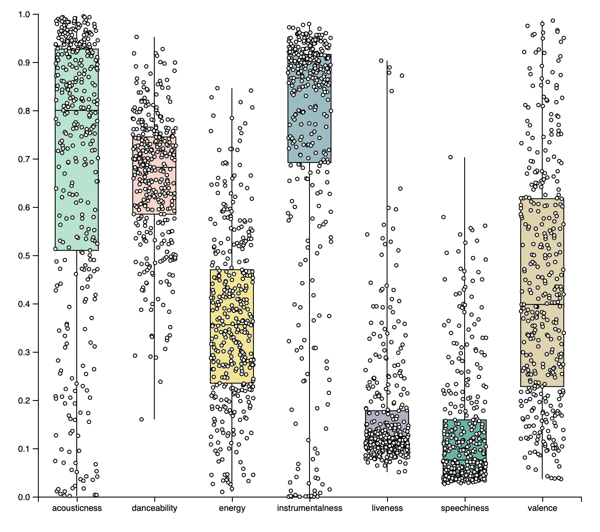
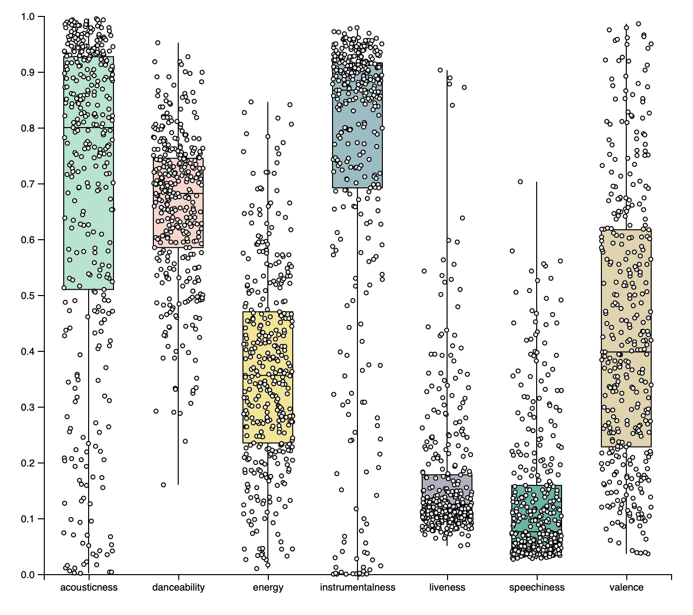

Spotify Audio Features: An Exploratory Data Analysis
Introduction:
“Lofi”, or low fidelity, is a type of music that is characterized by its deliberate use of "production flaws", electic sounds, and interesting instrumentals. The lack of broader discussion on the Internet about this genre of music, as well as my recent discovery of Spotify’s developer APIs, inspired me to create some data visualizations to assess its audio features.
Data:
I first wrote a Python utility that makes use of Spotipy (a Python library) to gain access to Spotify's web APIs. Each artist on Spotify is associated with a particular URI; I decided to use the URI for the artist, "Lofi Chillhop", due to the abundance of lofi-style music that this artist has released. Through some Python code, I was able to extract all the tracks from this artist's albums. Each track (along with its associated audio features) was subsequently written to a CSV file to build some data visualizations with.
Analysis:
This exploratory data analysis seeks to answer the primary question:
What generalizations can be made about the audio features that characterize this type of music?
According to Spotify’s API documents, audio can be evaluated based on 8 quantitative features:
Danceability: "Describes how suitable a track is for dancing based on a combination of musical elements including tempo, rhythm stability, beat strength, and overall regularity. A value of 0.0 is least danceable and 1.0 is most danceable."
Instrumentalness: "Predicts whether a track contains no vocals. “Ooh” and “aah” sounds are treated as instrumental in this context. Rap or spoken word tracks are clearly “vocal”. The closer the instrumentalness value is to 1.0, the greater likelihood the track contains no vocal content."
Energy: "Energy is a measure from 0.0 to 1.0 and represents a perceptual measure of intensity and activity. Typically, energetic tracks feel fast, loud, and noisy. For example, death metal has high energy, while a Bach prelude scores low on the scale."
Liveness: "Detects the presence of an audience in the recording. Higher liveness values represent an increased probability that the track was performed live."
Loudness: "The overall loudness of a track in decibels (dB)."
Speechiness: "Speechiness detects the presence of spoken words in a track. The more exclusively speech-like the recording (e.g. talk show, audio book, poetry), the closer to 1.0 the attribute value."
Valence: "A measure from 0.0 to 1.0 describing the musical positiveness conveyed by a track. Tracks with high valence sound more positive (e.g. happy, cheerful, euphoric), while tracks with low valence sound more negative (e.g. sad, depressed, angry)."
Acousticness: "A confidence measure from 0.0 to 1.0 of whether the track is acoustic. 1.0 represents high confidence the track is acoustic."
 

I created a box and whisker plot to analyze the median for 7 audio features. As observed, the Lofi songs in this dataset trend towards high acousticness, high danceability, low to mid energy, high instrumentality, low liveness, low speechiness, and low to mid valence.